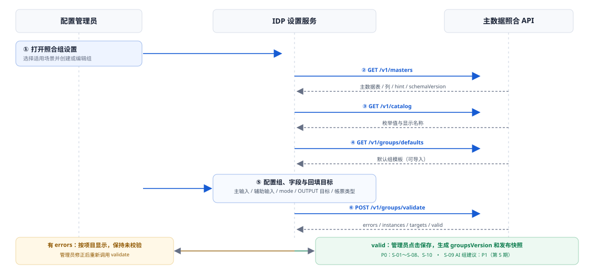

业务流程
2. 案件照合与批次/补件流程
4 / 10
2. 案件照合与批次/补件流程P0 / Q-01～Q-07 · 结果应用 A/C

IDP 处理方式（已定）新批次和补件独立创建任务，旧任务继续运行；重新识别使用新版本请求并取消旧任务；通过已完成任务列表轮询，结果分页读取，多个 taskId 合并为同一业务批次。
采用 Zurich 队列，不再向 Zurich 追加确认
V1.1 已明确请求队列、同优先级受理顺序和 50 份以上拆分的关联方式。IDP 在此基础上确定：新文件或补件创建独立任务并分别进入 OCR抽出确认；同一业务批次拆成多个 API 任务时，由 IDP 合并展示结果。
| 真实场景 | 式样书依据 | IDP 已定处理方式 |
|---|---|---|
| 追加文件到达 | 案件全部有效文件随新请求发送 | 创建新的独立批次任务 |
| 补件到达 | 没有补件专用字段 | 创建新的独立批次任务 |
| 每次重发全部文件 | 要求发送全部有效文件 | 按提交时点的全部有效文件处理，生成本批次结果 |
| 多批次执行顺序 | 同一优先级按受理顺序处理，并发量由 API 控制 | 沿用 Zurich 队列，不另建案件级队列 |
| 单次超过 50 份文件 | 相同 caseNo 拆分请求，变更 clientRequestId 序号 | 一个业务批次对应多个 API 任务，由 IDP 合并展示 |
新文件或补件创建独立批次任务，并分别进入 OCR抽出确认。超过 50 份时，一个业务批次拆成多个 Zurich 任务，由 IDP 保存 taskId 并合并结果。

IDP 理解获取主数据、默认组和目录，配置输入与回填目标，保存前校验，并生成 groupsVersion 与版本快照。S-09 AI 建议安排在 P1。
IDP 处理方式（已定）新批次和补件独立创建任务，旧任务继续运行；重新识别使用新版本请求并取消旧任务；通过已完成任务列表轮询，结果分页读取，多个 taskId 合并为同一业务批次。
| 模式 | 参与匹配 | 更新字段 | 示例 |
|---|---|---|---|
照合のみINPUT | 是 | 否 | 金融机构名假名。选择候选后仍保留 OCR 值 |
照合して反映INPUT_OUTPUT | 是 | 是 | 金融机构名、支店名。选择候选后更新成主数据值 |
反映のみOUTPUT | 否 | 是 | 金融机构代码、支店代码。选择候选后只回填结果 |
| 编号 | 模块 | 功能要求（式样书原文） | 式样书区分 | 优先级 |
|---|---|---|---|---|
| S-01 | 设置（标准化组） | 具有可以创建、修改、删除标准化组的设置界面。组具有不变的唯一 groupId、显示名称、主数据表、项目（列或提示信息、使用方式、IDP 的项目指定） | 必须 | P0 |
| S-02 | 设置（标准化组） | 设置界面根据主数据表一览（GET /v1/masters）生成。不在 IDP 中用固定的表持有主数据表、列、提示信息、显示名称、输入角色、可否回写。一览的版本（schemaVersion）变化时，无需重启即可反映 | 必须 | P0 |
| S-03 | 设置（标准化组） | 项目指定中，可以选择单据的项目（单据类型＋项目名）、单据中表的列（单据类型＋表名＋列名）、案件的标准项目。在一个组中，可以选择其他单据类型的项目 | 必须 | P0 |
| S-04 | 设置（标准化组） | 可以创建同一个主数据表的多个组。一个项目可以作为多个组的输入。将同一个项目设为多个组的回写目标时，给出警告 | 必须 | P0 |
| S-05 | 设置（标准化组） | 保存之前，校验组的设置（POST /v1/groups/validate）。按项目显示错误，有错误的组不保存 | 必须 | P0 |
| S-06 | 设置（标准化组） | 为设置附加版本（groupsVersion），保留变更的履历。可以在验证环境中确认后再放入生产环境 | 必须 | P0 |
| S-07 | 设置（标准化组） | 可以将 Zurich 的默认组（GET /v1/groups/defaults）导入到设置中。导入后，作为 IDP 的设置持有 | 必须 | P0 |
| S-10 | 设置（标准化组） | 写入值的设置：组的 OUTPUT、INPUT_OUTPUT 的项目中，可以选择主数据表一览中的任意列（包括不用于匹配的列〔inputRole=NONE〕）。写入目标可以选择单据的项目、表的列（与主输入相同的表）、案件的标准项目 | 必须 | P0 |
| Q-01 | 请求与结束的确认 | 案件的 OCR 抽取之后，通过请求发送案件的所有单据（按 RESULT JSON 的原样，附带单据类型 ID）、有效的所有组的设置及其版本（单据超过 50 件时拆分） | 必须 | P0 |
| Q-02 | 请求与结束的确认 | 组中有使用案件标准项目（CASE_FIELD）的设置时，发送案件的标准项目（caseResult） | 必须 | P0 |
| Q-03 | 请求与结束的确认 | 附带 clientRequestId，超时或 500 时使用相同的值重发。重新识别后用新的版本发出请求，并取消旧的任务 | 必须 | P0 |
| Q-04 | 请求与结束的确认 | 限制请求的发送并行数，429、503 时遵循 Retry-After。500 时一边延长间隔，一边加入随机波动后重试 | 必须 | P0 |
| Q-05 | 请求与结束的确认 | 通过定期查询已完成任务列表（GET /v1/standardizations?cursor=…）得知结束。保存游标，即使 IDP 重启也从后续开始查询 | 必须 | P0 |
| Q-06 | 请求与结束的确认 | 在任务进入终止状态之后读取结果。标准化对象较多时，分页获取 | 必须 | P0 |
| Q-07 | 请求与结束的确认 | 采用不使用回退的运用时，可以发送 options.fallback=false（可通过设置切换） | 必须 | P0 |
| 编号 | 模块 | 功能要求（式样书原文） | 式样书区分 | 优先级 |
|---|---|---|---|---|
| A-01 | 结果的反映 | 处理的分支只使用 status（任务、单据）、needsReview、master.values 与 targets、master.selection。needsReview 缺失或为 null 时作为需确认处理 | 必须 | P0 |
| A-02 | 结果的反映 | needsReview=false 的标准化对象，将 master.values 的值写入 targets 的位置（写入值。A-09），并保存 selection 用于登记。但是，用于匹配的输入中有 IDP 的 needReview=1 时，在识别确认之后采用 | 必须 | P0 |
| A-03 | 结果的反映 | needsReview=true 的标准化对象，不回写，作为 OCR 抽取确认的对象（追加确认条件“标准化需确认”） | 必须 | P0 |
| A-04 | 结果的反映 | 位置的 type 为未知的值、单据或任务为 FAILED、有 INVALID_GROUP、MASTER_TABLE_NOT_ENABLED 的提示时，将相应组的项目转为人工确认。不反映 CANCELLED 的结果 | 必须 | P0 |
| A-05 | 结果的反映 | 对于组的回写目标的项目，不重复设置 IDP 的“主数据匹配” | 必须 | P0 |
| A-06 | 结果的反映 | 按标准化对象，保存 itemId、groupId、所采用的记录（object、masterId、selection、values）、needsReview、原因（用于确认、审计、输出、返回确定的结果） | 必须 | P0 |
| A-07 | 结果的反映 | 不将 confidence 作为阈值使用 | 必须 | P0 |
| A-08 | 结果的反映 | groupId 为 FALLBACK 的标准化对象（回退的结果），一定转为人工确认（以 needsReview=true 返回）。使用单据 warnings 中的 FALLBACK_USED 来发现没有设置的单据类型 | 必须 | P0 |
| A-09 | 结果的反映 | 开发写入值的功能：从所采用的行（master、候选、alternatives、splitItems 的 master、检索的结果均可）的 values 中，将 targets 中各列的值写入该位置的项目（没有值的列不写入）。不用于匹配的列（编码、分类等）的值，也用同一处理写入。作为与主数据表、列无关的通用处理，在自动采用时、在确认界面中选择候选时、重新标准化时，使用同一处理 | 必须 | P0 |
| C-01 | 确认界面 | 对于需确认的标准化对象，显示组的项目的识别值、master（推定值。初始值）、candidates（最多前 5 个）、原因（reviewReasons[].message）、依据（reason）、备注（notesForAssessor）。SPLIT 显示全部要素（主要素加标记），NEW_CANDIDATE 显示建议的名称和出处 | 必须 | P0 |
| C-02 | 确认界面 | 操作人员选择候选后，将该候选的 values 的值重新写入该标准化对象的 targets（A-09），并保存该候选的 selection | 必须 | P0 |
| C-03 | 确认界面 | 操作人员修改了组的输入的识别值后，通过单个值的标准化（ref 中为原结果）重新标准化，并重新反映结果 | 必须 | P0 |
| C-05 | 确认界面 | 自动采用的标准化对象，也可以在确认界面中显示所采用的行和 candidates，操作人员可以改为其他候选（改选时与 C-02 同样处理） | 必须 | P0 |
| 编号 | 模块 | 功能要求（式样书原文） | 式样书区分 | 优先级 |
|---|---|---|---|---|
| E-02 | 输出与后续系统 | 在数据映射中，可以将写入的值和 selection 对应到输出的项目（也可以将所采用的行的 values 中的列，直接对应到输出的项目） | 必须 | P0 |
| 编号 | 模块 | 要求（式样书原文） | 式样书区分 | 优先级 |
|---|---|---|---|---|
| G-01 | 通用性与兼容性 | 设置界面、请求、回写、确认界面、输出的任何地方，都不编写针对主数据表或列的专门处理（即使主数据表或列增加，只需设置即可使用） | 必须 | P0 |
| G-02 | 通用性与兼容性 | 忽略响应中的未知字段，用字符串接收“会增加”的枚举值，ID 保持字符串处理 | 必须 | P0 |
| G-03 | 通用性与兼容性 | 显示名称从主数据表一览和目录中获取 | 必须 | P0 |
| N-01 | 非功能 | 通信使用 HTTPS，并信任内部证书颁发机构的证书。API Key 作为机密信息保管，不在界面和日志中显示 | 必须 | P0 |
| N-02 | 非功能 | 连接、等待响应的时间，以及接收缓冲区的大小，与 §8.5 一致 | 必须 | P0 |
| N-03 | 非功能 | Zurich 通知时，可以去除个人信息项目后再发送 | 必须 | P0 |